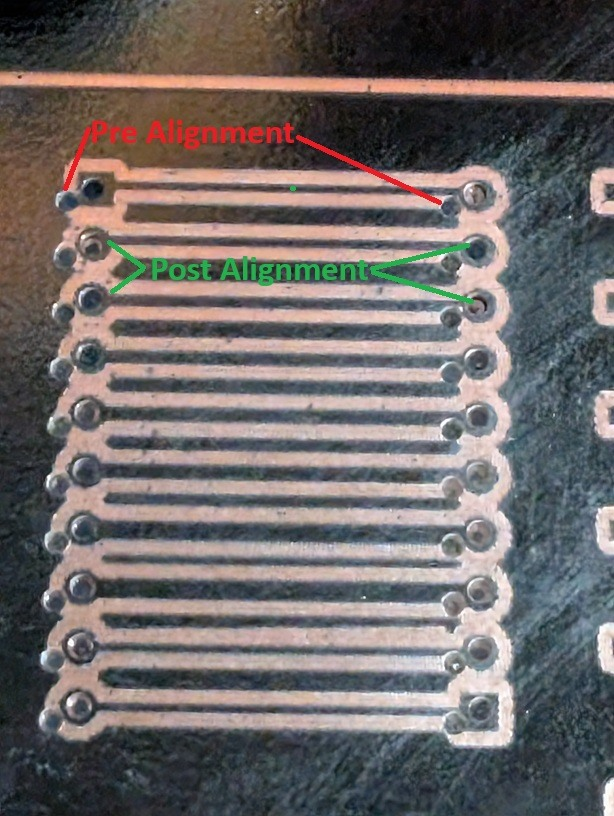
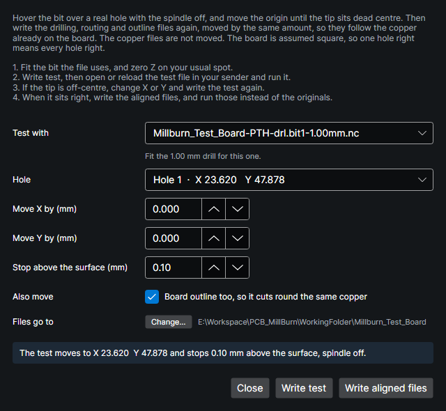

A 0.8 mm hole in a 1.6 mm pad leaves a ring of copper 0.4 mm wide. Set work zero 0.3 mm out, and one side of that ring is down to 0.1 mm.
This guide finds that error by looking at it, with the spindle off, before anything is drilled. Bring the bit down just above a real pad, see how far off centre it is, enter that as an offset, and look again. When it sits dead centre, write the files again with the offset built in. Two or three tries is usually enough.

| Step | Use it? | Why |
|---|---|---|
| Top and bottom copper | No | These make the copper. There is nothing on the board yet to line up with; they are what everything after them lines up to. |
| Drilling and slots | Yes | The holes have to land in pads that are already on the board, however they got there, and especially if the board has been off the machine since. |
| Board outline | Yes | The outline has to go round the same copper. If the board was unclamped after drilling, test again before cutting it out. |
If the board never left the machine after the copper was cut and work zero was not touched, the holes should already line up. One test at 0, 0 confirms it in a minute.
images/drill-alignment-board-on-mill.jpg
The test file cuts nothing. With the spindle off, it:
Where it aims. For a hole, the centre. For a slot, the middle of the slot: halfway along its length and halfway across its width. The dialog lists each one as Hole or Slot, with the position it aims at.
If the bit touches the copper, stop the machine. Z zero is below the surface. Zero Z again and rerun the test. The last millimetre is slow to give you time to stop it.
Job › Drill alignment… It works from the project as it stands; you do not need to have exported first.

Check Files go to. The test file and the aligned files are written there. By default that is the folder you last exported to; Change… picks another. A long path is shortened in the middle: hover over it to see all of it, or widen the window.
Test with lists every drilling and slot file the project writes. Hole lists what is in the chosen file, in the order the file reaches them. Pick a pad you can see clearly. It does not matter which file you test with: the offset you find goes into all of them.
The line under the file name says which bit that file uses. At the outline step, leave the end mill in and pick any hole that has already been drilled.
Leave Move X by and Move Y by at 0.000 and press
Write test. The file is YourProject.align-test.nc. Open it in your
sender and run it.
images/drill-alignment-off-centre.jpg
If the tip sits dead centre, you are done: the files as exported already line up, and there is nothing to write. Otherwise, work out how far the tip has to travel to reach the centre, in X and in Y.
Which way is plus? A positive number moves the tip towards the machine’s +X or +Y. If you are not sure which way that is over the board, jog 1 mm in +X and watch where the tip goes.
Use something whose size you know as a ruler. The pad’s size is in your design, and the bit’s diameter is on the bit. If a 1.0 mm drill sits about a quarter of its own width left of centre, that is about 0.25 mm. A guess gets you close, and the next test shows what is left.
When the test has finished the machine is idle, so the jog controls work.
X Y
Hole 3, from the list 55.625 58.305
Work position, centred 55.795 58.255
------ ------
Move X by / Move Y by +0.170 -0.050
Type the numbers into Move X by and Move Y by. Enter the whole offset from where the test started, not just the extra since your last try. Press Write test again. It overwrites the same file, so reload it in your sender (most senders keep the copy they first opened), then run it.
There is no need to send the head back to 0, 0 between tests. Every test rises to safe height first and then moves straight to the hole.
Repeat until you are happy with it. The dialog keeps your numbers until you close MillBurn, so closing and reopening the dialog in between loses nothing.
| Test | Move X by | Move Y by | What you see | Next |
|---|---|---|---|---|
| 1 | 0.000 | 0.000 | Tip about 0.15 mm short of centre in X, and 0.05 mm past it in Y | Enter +0.15 and −0.05 |
| 2 | +0.150 | −0.050 | Still a hair short in X, about 0.02 mm | Enter +0.17 (the whole offset, not +0.02) |
| 3 | +0.170 | −0.050 | Dead centre | Check a hole on the far side |
Pick a hole near the opposite corner of the board and write a test with the same offset. If that one is centred too, the offset is right everywhere on the board.
If it is out by a different amount, the board is not square to the machine. An offset moves every hole by the same amount, so it cannot correct a board that is sitting at an angle. Square the board up and start again from step 3.
images/drill-alignment-centred.jpg
Press Write aligned files. Every drilling and slot file is written again with the offset built in, and so is the board outline unless you untick Board outline too. The dialog closes. For the test board, that is:
| File | What it is |
|---|---|
Millburn_Test_Board-PTH-drl.bit1-1.00mm.aligned.nc…-PTH-drl.bit2-0.50mm.aligned.nc, …bit3… |
Drilling, one file per bit, as usual |
…-PTH-drl.slots.aligned.nc…-NPTH-drl.slots.aligned.nc |
Routed slots and milled holes |
…-Edge_Cuts.aligned.nc |
The board outline, when Board outline too is ticked |
…-PTH-drl.drilling.aligned.html…slots.aligned.html |
The pages that go with them, listing the aligned files |
The copper files and the stock are never moved. The copper is what you lined everything up with, and the stock is cut before there is any copper on it.
Each aligned file says so near the top:
( Aligned with the drill alignment test: every move shifted X+0.170 Y-0.050 mm from the plain export. )
Run the .aligned.nc files instead of the originals, in the order the drilling page
suggests. Change bits and set Z as you normally would. X and Y zero stay where they are, and the
offset is already in every file, so you do not need to test again for each bit.
Consider moving the original, un-aligned files into another folder, so that neither you nor your sender’s recent-files list can pick one by mistake.
align <project> --hole 3 --offset 0.17,-0.05
writes the test file, and export <project> --align 0.17,-0.05 --align-outline --write
writes the aligned files.